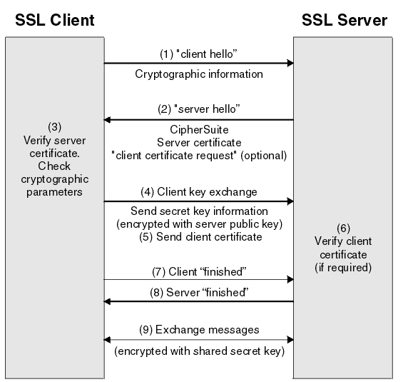

<!DOCTYPE HTML>
<html lang="zh-CN">
<head><meta name="generator" content="Hexo 3.8.0">
    <!--Setting-->
    <meta charset="UTF-8">
    <meta name="viewport" content="width=device-width, user-scalable=no, initial-scale=1.0, maximum-scale=1.0, minimum-scale=1.0">
    <meta http-equiv="X-UA-Compatible" content="IE=Edge,chrome=1">
    <meta http-equiv="Cache-Control" content="no-siteapp">
    <meta http-equiv="Cache-Control" content="no-transform">
    <meta name="renderer" content="webkit|ie-comp|ie-stand">
    <meta name="apple-mobile-web-app-capable" content="云运维">
    <meta name="apple-mobile-web-app-status-bar-style" content="black">
    <meta name="format-detection" content="telephone=no,email=no,adress=no">
    <meta name="browsermode" content="application">
    <meta name="screen-orientation" content="portrait">
    <link rel="dns-prefetch" href="https://www.172173.com">
    <!--SEO-->

    <meta name="keywords" content="https Certbot Let’s Encrypt">


    <meta name="description" content="HTTPS-使用Certbot自动配置Let’s Encrypt证书1. HTTPS基本介绍
现在各大厂商都在推行HTTPS，比如谷歌要求多个顶级域名要用HTTPS来加密，苹果要求开发者全部采用...">


<meta name="robots" content="all">
<meta name="google" content="all">
<meta name="googlebot" content="all">
<meta name="verify" content="all">

    <!--Title-->


<title>HTTPS-Certbot | 云运维</title>


    <link rel="alternate" href="/atom.xml" title="云运维" type="application/atom+xml">


    <link rel="icon" href="/favicon.ico">

    


<link rel="stylesheet" href="/css/bootstrap.min.css?rev=3.3.7">
<link rel="stylesheet" href="/css/font-awesome.min.css?rev=4.5.0">
<link rel="stylesheet" href="/css/style.css?rev=@@hash">


    
	<div class="hide">
		<script type="text/javascript">
			var cnzz_protocol = (("https:" == document.location.protocol) ? " https://" : " http://");document.write(unescape("%3Cspan class='cnzz_stat_icon_1263868967 hide' %3E%3Cscript%20src%3D%22https%3A%2F%2Fs95.cnzz.com%2Fz_stat.php%3Fweb_id%3D1272564536%22%3E%3C%2Fscript%3E%3C/span%3E%3Cscript src='" + cnzz_protocol + "s19.cnzz.com/z_stat.php%3Fid%3D1263868967%26show%3Dpic1' type='text/javascript'%3E%3C/script%3E"));
		</script>
	</div>


	<script>
		(function(i, s, o, g, r, a, m) {
		    i['GoogleAnalyticsObject'] = r;
		    i[r] = i[r] || function() {
		        (i[r].q = i[r].q || []).push(arguments)
		    }, i[r].l = 1 * new Date();
		    a = s.createElement(o),
		    m = s.getElementsByTagName(o)[0];
		    a.async = 1;
		    a.src = g;
		    m.parentNode.insertBefore(a, m)
		})(window, document, 'script', 'https://www.google-analytics.com/analytics.js', 'ga');
		ga('create', 'UA-139064963-1', 'auto');
		ga('send', 'pageview');
	</script>


    

    <script>
        (function(){
            var bp = document.createElement('script');
            var curProtocol = window.location.protocol.split(':')[0];
            if (curProtocol === 'https') {
                bp.src = 'https://zz.bdstatic.com/linksubmit/push.js';
            }
            else {
                bp.src = 'http://push.zhanzhang.baidu.com/push.js';
            }
            var s = document.getElementsByTagName("script")[0];
            s.parentNode.insertBefore(bp, s);
        })();
    </script>

    <script async src="//pagead2.googlesyndication.com/pagead/js/adsbygoogle.js"></script>
    <script>
      (adsbygoogle = window.adsbygoogle || []).push({
          google_ad_client: "ca-pub-7288533661448713",
          enable_page_level_ads: true
      });
    </script>
</head>

</html>
<!--[if lte IE 8]>
<style>
    html{ font-size: 1em }
</style>
<![endif]-->
<!--[if lte IE 9]>
<div style="ie">你使用的浏览器版本过低，为了你更好的阅读体验，请更新浏览器的版本或者使用其他现代浏览器，比如Chrome、Firefox、Safari等。</div>
<![endif]-->

<body>
    <header class="main-header" style="background-image:url(https://res.cloudinary.com/www-172173-com/image/upload/v1556197753/banner_y3vilj.jpg)">
    <div class="main-header-box">
        <a class="header-avatar" href="/" title="zj">
            
        </a>
        <div class="branding">
        	<!--<h2 class="text-hide">Snippet主题,从未如此简单有趣</h2>-->
            
                <h2> 越努力越幸运 </h2>
            
    	</div>
    </div>
</header>
    <nav class="main-navigation">
    <div class="container">
        <div class="row">
            <div class="col-sm-12">
                <div class="navbar-header"><span class="nav-toggle-button collapsed pull-right" data-toggle="collapse" data-target="#main-menu" id="mnav">
                    <span class="sr-only"></span>
                        <i class="fa fa-bars"></i>
                    </span>
                    <a class="navbar-brand" href="https://www.172173.com">云运维</a>
                </div>
                <div class="collapse navbar-collapse" id="main-menu">
                    <ul class="menu">
                        
                            <li role="presentation" class="text-center">
                                <a href="/"><i class="fa "></i>首页</a>
                            </li>
                        
                            <li role="presentation" class="text-center">
                                <a href="/categories/运维/"><i class="fa "></i>运维</a>
                            </li>
                        
                            <li role="presentation" class="text-center">
                                <a href="/categories/python/"><i class="fa "></i>python</a>
                            </li>
                        
                            <li role="presentation" class="text-center">
                                <a href="/categories/自动化/"><i class="fa "></i>自动化</a>
                            </li>
                        
                            <li role="presentation" class="text-center">
                                <a href="/categories/工具/"><i class="fa "></i>工具</a>
                            </li>
                        
                            <li role="presentation" class="text-center">
                                <a href="/archives/"><i class="fa "></i>时间轴</a>
                            </li>
                        
                    </ul>
                </div>
            </div>
        </div>
    </div>
</nav>
    <section class="content-wrap">
        <div class="container">
            <div class="row">
                <main class="col-md-8 main-content m-post">
                    <p id="process"></p>
<article class="post">
    <div class="post-head">
        <h1 id="HTTPS-Certbot">
            
	            HTTPS-Certbot
            
        </h1>
        <div class="post-meta">
    
        <span class="categories-meta fa-wrap">
            <i class="fa fa-folder-open-o"></i>
            <a class="category-link" href="/categories/运维/">运维</a>
        </span>
    

    
        <span class="fa-wrap">
            <i class="fa fa-tags"></i>
            <span class="tags-meta">
                
                    <a class="tag-link" href="/tags/https-Certbot-Let’s-Encrypt/">https Certbot Let’s Encrypt</a>
                
            </span>
        </span>
    

    
        
        <span class="fa-wrap">
            <i class="fa fa-clock-o"></i>
            <span class="date-meta">2019/04/25</span>
        </span>
        
            <span class="fa-wrap">
                <i class="fa fa-eye"></i>
                <span id="busuanzi_value_page_pv"></span>
            </span>
        
    
</div>
            
            
    </div>
    
    <div class="post-body post-content">
        <h2 id="HTTPS-使用Certbot自动配置Let’s-Encrypt证书"><a href="#HTTPS-使用Certbot自动配置Let’s-Encrypt证书" class="headerlink" title="HTTPS-使用Certbot自动配置Let’s Encrypt证书"></a>HTTPS-使用Certbot自动配置Let’s Encrypt证书</h2><h3 id="1-HTTPS基本介绍"><a href="#1-HTTPS基本介绍" class="headerlink" title="1. HTTPS基本介绍"></a>1. HTTPS基本介绍</h3><blockquote>
<p>现在各大厂商都在推行HTTPS，比如谷歌要求多个顶级域名要用HTTPS来加密，苹果要求开发者全部采用HTTPS等等。那什么是HTTPS呢？其实HTTPS只是HTTP的一个拓展，是在HTTP的基础上利用SSL/TLS来加密数据包的。工作流程如下：</p>
</blockquote>
<p></p>
<blockquote>
<p>An overview of the SSL or TLS handshake</p>
</blockquote>
<blockquote>
<p>图片来自IBM Knowledge Center: An overview of the SSL or TLS handshake<br><a href="https://www.ibm.com/support/knowledgecenter/en/SSFKSJ_7.1.0/com.ibm.mq.doc/sy10660_.htm">https://www.ibm.com/support/knowledgecenter/en/SSFKSJ_7.1.0/com.ibm.mq.doc/sy10660_.htm</a></p>
</blockquote>
<blockquote>
<p>注意第(2)步Server给Client发送了一个Server certificates，这个里面包含有Server的一些信息，如域名、公司信息、序列号和签名信息组成等，这个证书可以个人生成，也可以由权威机构签发，当然个人的就不受大众信任，而权威机构签发的证书则会被信任。</p>
</blockquote>
<blockquote>
<p>具体的可以参考：细说 CA 和证书<br><a href="https://www.barretlee.com/blog/2016/04/24/detail-about-ca-and-certs/">https://www.barretlee.com/blog/2016/04/24/detail-about-ca-and-certs/</a></p>
</blockquote>
<h3 id="2-Let’s-Encrypt"><a href="#2-Let’s-Encrypt" class="headerlink" title="2. Let’s Encrypt"></a>2. Let’s Encrypt</h3><blockquote>
<p>CA的证书提供商有许多个，有收费的有免费的，而Let’s Encrypt就是其中之一的免费提供商。<br><a href="https://letsencrypt.org/">https://letsencrypt.org/</a></p>
</blockquote>
<h4 id="2-1-如何获取Let’s-Encript的证书呢？"><a href="#2-1-如何获取Let’s-Encript的证书呢？" class="headerlink" title="2.1 如何获取Let’s Encript的证书呢？"></a>2.1 如何获取Let’s Encript的证书呢？</h4><blockquote>
<p>要从Let’s Encript获取某个域名的证书，需要证明那你对该域名拥有控制权，对于该证明你可以使用某个使用ACME协议的软件来实现，而Certbot就是官方出的一个ACME客户端。</p>
</blockquote>
<h3 id="3-Certbot介绍"><a href="#3-Certbot介绍" class="headerlink" title="3. Certbot介绍"></a>3. Certbot介绍</h3><blockquote>
<p>先介绍一些Certbot相关概念。</p>
</blockquote>
<h4 id="3-1-Authenticators和Installers"><a href="#3-1-Authenticators和Installers" class="headerlink" title="3.1 Authenticators和Installers"></a>3.1 Authenticators和Installers</h4><blockquote>
<p>Certbot支持两种类型的plugin，一种是用来获取和安装证书的，成为称为Authenticators；另外一种是用来安装证书的，称为Installers。有的plugin支持一种，有的两种都支持，如nginx。</p>
</blockquote>
<blockquote>
<p>安装证书：自动修改配置文件，如修改nginx的某个.conf文件</p>
</blockquote>
<blockquote>
<p>Authenticators plugin使用certonly命令来获取证书，而Installers plugin使用install命令来安装证书。</p>
</blockquote>
<h4 id="3-2-plugin说明"><a href="#3-2-plugin说明" class="headerlink" title="3.2 plugin说明"></a>3.2 plugin说明</h4><blockquote>
<p>下面列举几个常用的plugin作简要说明：</p>
</blockquote>
<blockquote>
<p>Webroot：本地有运行webserver并且有能力修改其配置，就可以用该种方式（创建隐藏文件.well-known），获取证书时无需暂停webserver的运行。</p>
</blockquote>
<blockquote>
<p>Standalone：服务器未运行webserver可以使用该方式，要保持80或443端口开放。</p>
</blockquote>
<blockquote>
<p>Nginx：自动获取和安装证书（自动修改配置文件）。</p>
</blockquote>
<h4 id="3-3-Certbot使用流程"><a href="#3-3-Certbot使用流程" class="headerlink" title="3.3 Certbot使用流程"></a>3.3 Certbot使用流程</h4><blockquote>
<p>Certbot的使用包含以下几个部分：</p>
</blockquote>
<blockquote>
<p>安装Certbot</p>
</blockquote>
<blockquote>
<p>生成证书</p>
</blockquote>
<blockquote>
<p>配置Web Server</p>
</blockquote>
<blockquote>
<p>更新证书</p>
</blockquote>
<h4 id="3-4-Certbot安装"><a href="#3-4-Certbot安装" class="headerlink" title="3.4 Certbot安装"></a>3.4 Certbot安装</h4><blockquote>
<p>安装Certbot参考：Certbot，直接选择软件和操作系统即可。</p>
</blockquote>
<p><a href="https://certbot.eff.org/lets-encrypt/centosrhel7-apache">https://certbot.eff.org/lets-encrypt/centosrhel7-apache</a></p>
<blockquote>
<p>centos 6<br><figure class="highlight plain"><table><tr><td class="gutter"><pre><span class="line">1</span><br><span class="line">2</span><br><span class="line">3</span><br><span class="line">4</span><br></pre></td><td class="code"><pre><span class="line">wget https://dl.eff.org/certbot-auto</span><br><span class="line">sudo mv certbot-auto   /usr/local/bin/certbot</span><br><span class="line">sudo chown root /usr/local/bin/certbot</span><br><span class="line">sudo chmod 0755 /usr/local/bin/certbot</span><br></pre></td></tr></table></figure></p>
</blockquote>
<blockquote>
<p>centos 7<br><figure class="highlight plain"><table><tr><td class="gutter"><pre><span class="line">1</span><br></pre></td><td class="code"><pre><span class="line">yum install python2-certbot-apache</span><br></pre></td></tr></table></figure></p>
</blockquote>
<h4 id="3-4-获取证书"><a href="#3-4-获取证书" class="headerlink" title="3.4 获取证书"></a>3.4 获取证书</h4><blockquote>
<p>对于nginx可以使用certbot –nginx来获取和安装证书。<br><figure class="highlight plain"><table><tr><td class="gutter"><pre><span class="line">1</span><br></pre></td><td class="code"><pre><span class="line">certbot --nginx certonly</span><br></pre></td></tr></table></figure></p>
</blockquote>
<figure class="highlight plain"><table><tr><td class="gutter"><pre><span class="line">1</span><br><span class="line">2</span><br><span class="line">3</span><br><span class="line">4</span><br><span class="line">5</span><br><span class="line">6</span><br><span class="line">7</span><br><span class="line">8</span><br><span class="line">9</span><br><span class="line">10</span><br><span class="line">11</span><br><span class="line">12</span><br><span class="line">13</span><br><span class="line">14</span><br><span class="line">15</span><br><span class="line">16</span><br><span class="line">17</span><br><span class="line">18</span><br><span class="line">19</span><br><span class="line">20</span><br><span class="line">21</span><br><span class="line">22</span><br><span class="line">23</span><br></pre></td><td class="code"><pre><span class="line">Saving debug log to /var/log/letsencrypt/letsencrypt.log</span><br><span class="line">Plugins selected: Authenticator nginx, Installer nginx</span><br><span class="line">Enter email address (used for urgent renewal and security notices) (Enter &apos;c&apos; to</span><br><span class="line">cancel): 278202253@qq.com</span><br><span class="line"></span><br><span class="line">- - - - - - - - - - - - - - - - - - - - - - - - - - - - - - - - - - - - - - - -</span><br><span class="line">Please read the Terms of Service at</span><br><span class="line">https://letsencrypt.org/documents/LE-SA-v1.2-November-15-2017.pdf. You must</span><br><span class="line">agree in order to register with the ACME server at</span><br><span class="line">https://acme-v02.api.letsencrypt.org/directory</span><br><span class="line">- - - - - - - - - - - - - - - - - - - - - - - - - - - - - - - - - - - - - - - -</span><br><span class="line">(A)gree/(C)ancel: A</span><br><span class="line"></span><br><span class="line">- - - - - - - - - - - - - - - - - - - - - - - - - - - - - - - - - - - - - - - -</span><br><span class="line">Would you be willing to share your email address with the Electronic Frontier</span><br><span class="line">Foundation, a founding partner of the Let&apos;s Encrypt project and the non-profit</span><br><span class="line">organization that develops Certbot? We&apos;d like to send you email about our work</span><br><span class="line">encrypting the web, EFF news, campaigns, and ways to support digital freedom.</span><br><span class="line">- - - - - - - - - - - - - - - - - - - - - - - - - - - - - - - - - - - - - - - -</span><br><span class="line">(Y)es/(N)o: n</span><br><span class="line"></span><br><span class="line">Which names would you like to activate HTTPS for?</span><br><span class="line">选择你需要证书的站点</span><br></pre></td></tr></table></figure>
<blockquote>
<p>自己编译安装的nginx 需要增加软连接<br>报错<br><figure class="highlight plain"><table><tr><td class="gutter"><pre><span class="line">1</span><br></pre></td><td class="code"><pre><span class="line">The error was: NoInstallationError(&quot;Could not find a usable &apos;nginx&apos; binary. Ensure nginx exists, the binary is executable, and your PATH is set correctly.&quot;,)</span><br></pre></td></tr></table></figure></p>
</blockquote>
<blockquote>
<p>解决<br><figure class="highlight plain"><table><tr><td class="gutter"><pre><span class="line">1</span><br></pre></td><td class="code"><pre><span class="line">ln -s /usr/local/nginx/sbin/nginx /usr/bin/nginx</span><br></pre></td></tr></table></figure></p>
</blockquote>
<blockquote>
<p>报错<br><figure class="highlight plain"><table><tr><td class="gutter"><pre><span class="line">1</span><br></pre></td><td class="code"><pre><span class="line">nginx: [emerg] open() &quot;/etc/nginx/nginx.conf&quot; failed (2: No such file or directory)</span><br></pre></td></tr></table></figure></p>
</blockquote>
<blockquote>
<p>解决<br><figure class="highlight plain"><table><tr><td class="gutter"><pre><span class="line">1</span><br></pre></td><td class="code"><pre><span class="line">ln -s /usr/local/nginx/conf /etc/nginx</span><br></pre></td></tr></table></figure></p>
</blockquote>
<blockquote>
<p>获取完之后可以通过certbot certificates命令查看证书：</p>
</blockquote>
<blockquote>
<p>root@node01:~# certbot certificates</p>
</blockquote>
<blockquote>
<p>Saving debug log to /var/log/letsencrypt/letsencrypt.log——————————————————————————-<br>Found the following certs:<br>  Certificate Name: <a href="http://www.youdomain.com">www.youdomain.com</a><br>    Domains: <a href="http://www.youdomain.com">www.youdomain.com</a><br>    Expiry Date: 2018-09-03 02:08:54+00:00 (VALID: 89 days)<br>    Certificate Path: /etc/letsencrypt/live/<a href="http://www.youdomain.com/fullchain.pem">www.youdomain.com/fullchain.pem</a></p>
</blockquote>
<pre><code>Private Key Path: /etc/letsencrypt/live/www.youdomain.com/privkey.pem
</code></pre><hr>
<h4 id="3-5-配置Web-Server"><a href="#3-5-配置Web-Server" class="headerlink" title="3.5 配置Web Server"></a>3.5 配置Web Server</h4><blockquote>
<p>不同Web Server的配置方式不同，这里以Nginx为例，在配置文件youdomain.conf中添加：<br><figure class="highlight plain"><table><tr><td class="gutter"><pre><span class="line">1</span><br><span class="line">2</span><br><span class="line">3</span><br><span class="line">4</span><br><span class="line">5</span><br><span class="line">6</span><br><span class="line">7</span><br><span class="line">8</span><br><span class="line">9</span><br><span class="line">10</span><br><span class="line">11</span><br><span class="line">12</span><br><span class="line">13</span><br><span class="line">14</span><br><span class="line">15</span><br><span class="line">16</span><br></pre></td><td class="code"><pre><span class="line">server &#123;</span><br><span class="line">    listen [::]:80;</span><br><span class="line"></span><br><span class="line">    root /var/www/youdomain;</span><br><span class="line">    index index.html index.htm;</span><br><span class="line"></span><br><span class="line">    server_name www.yourdomain.com;</span><br><span class="line"></span><br><span class="line">    charset utf-8;    </span><br><span class="line">    #.................</span><br><span class="line"></span><br><span class="line">    listen 443 ssl; </span><br><span class="line">ssl_certificate /etc/letsencrypt/live/www.yourdomain.com/fullchain.pem; </span><br><span class="line">ssl_certificate_key /etc/letsencrypt/live/www.yourdomain.com/privkey.pem; </span><br><span class="line"></span><br><span class="line">&#125;</span><br></pre></td></tr></table></figure></p>
</blockquote>
<blockquote>
<p>需要了解Nginx的使用</p>
</blockquote>
<blockquote>
<p>配置完之后更新配置即可(nginx -s reload)，到这里证书配置就完成了，正常情况下该域名HTTPS就可以访问了。</p>
</blockquote>
<h4 id="3-7-更新证书"><a href="#3-7-更新证书" class="headerlink" title="3.7 更新证书"></a>3.7 更新证书</h4><blockquote>
<p>由于Let’s Encrypt颁发的证书的有效期只有90天，这就需要更新证书。</p>
</blockquote>
<blockquote>
<p>Renewing certificates<br><a href="https://certbot.eff.org/docs/using.html#renewing-certificates">https://certbot.eff.org/docs/using.html#renewing-certificates</a></p>
</blockquote>
<blockquote>
<p>更新命令<br><figure class="highlight plain"><table><tr><td class="gutter"><pre><span class="line">1</span><br></pre></td><td class="code"><pre><span class="line">certbot renew</span><br></pre></td></tr></table></figure></p>
</blockquote>
<blockquote>
<p>计划任务自动更新<br><figure class="highlight plain"><table><tr><td class="gutter"><pre><span class="line">1</span><br><span class="line">2</span><br></pre></td><td class="code"><pre><span class="line">crontab -e</span><br><span class="line">15 2 20 */2 * certbot renew</span><br></pre></td></tr></table></figure></p>
</blockquote>
<blockquote>
<p>如果使用了nginx plugin，则更新时需要使用certbot renew –quiet –installer node，否则会自动安装证书导致错误。</p>
</blockquote>

    </div>
    
        <div class="reward" ontouchstart>
    <div class="reward-wrap">赏
        <div class="reward-box">
            
            
                <span class="reward-type">
                    <b>微信打赏</b>
                </span>
            
        </div>
    </div>
    <p class="reward-tip">赞赏是不耍流氓的鼓励</p>
</div>


    
    <div class="post-footer">
        <div>
            
                转载声明：商业转载请联系作者获得授权,非商业转载请注明出处 © <a href target="_blank">Snippet</a>
            
        </div>
        <div>
            
        </div>
    </div>
</article>

<div class="article-nav prev-next-wrap clearfix">
    
        <a href="/kafka-install.html" class="pre-post btn btn-default" title="kafka-install">
            <i class="fa fa-angle-left fa-fw"></i><span class="hidden-lg">上一篇</span>
            <span class="hidden-xs">kafka-install</span>
        </a>
    
    
        <a href="/hexo-valine.html" class="next-post btn btn-default" title="hexo-valine">
            <span class="hidden-lg">下一篇</span>
            <span class="hidden-xs">hexo-valine</span><i class="fa fa-angle-right fa-fw"></i>
        </a>
    
</div>


<!--<script async src="//pagead2.googlesyndication.com/pagead/js/adsbygoogle.js"></script>
<script>
  (adsbygoogle = window.adsbygoogle || []).push({
    google_ad_client: "ca-pub-7288533661448713",
    enable_page_level_ads: true
  });
</script>
-->


    <div id="comments">
        
	
    <div id="vcomments" class="valine"></div>
    <script src="//cdn1.lncld.net/static/js/3.0.4/av-min.js"></script>
<script src="/assets/valine.min.js"></script>

    <script>
        new Valine({
            av: AV,
            el: '#vcomments',
            appId: 'xFcujt6m2KQvPvjBxRVRiD6R-gzGzoHsz',
            appKey: 'wn426D29iJpKjYczYLBPPCiP',
            placeholder: '说点什么吧',
            notify: false,
            verify: false,
            avatar: 'mm',
            meta: 'nick,mail'.split(','),
            pageSize: '10',
            path: window.location.pathname,
            lang: 'zh-CN'.toLowerCase()
        })
    </script>


    </div>


                </main>
                
                    <aside id="article-toc" role="navigation" class="col-md-4">
    <div class="widget">
        <h3 class="title">文章目录</h3>
        
            <ol class="toc"><li class="toc-item toc-level-2"><a class="toc-link" href="#HTTPS-使用Certbot自动配置Let’s-Encrypt证书"><span class="toc-text">HTTPS-使用Certbot自动配置Let’s Encrypt证书</span></a><ol class="toc-child"><li class="toc-item toc-level-3"><a class="toc-link" href="#1-HTTPS基本介绍"><span class="toc-text">1. HTTPS基本介绍</span></a></li><li class="toc-item toc-level-3"><a class="toc-link" href="#2-Let’s-Encrypt"><span class="toc-text">2. Let’s Encrypt</span></a><ol class="toc-child"><li class="toc-item toc-level-4"><a class="toc-link" href="#2-1-如何获取Let’s-Encript的证书呢？"><span class="toc-text">2.1 如何获取Let’s Encript的证书呢？</span></a></li></ol></li><li class="toc-item toc-level-3"><a class="toc-link" href="#3-Certbot介绍"><span class="toc-text">3. Certbot介绍</span></a><ol class="toc-child"><li class="toc-item toc-level-4"><a class="toc-link" href="#3-1-Authenticators和Installers"><span class="toc-text">3.1 Authenticators和Installers</span></a></li><li class="toc-item toc-level-4"><a class="toc-link" href="#3-2-plugin说明"><span class="toc-text">3.2 plugin说明</span></a></li><li class="toc-item toc-level-4"><a class="toc-link" href="#3-3-Certbot使用流程"><span class="toc-text">3.3 Certbot使用流程</span></a></li><li class="toc-item toc-level-4"><a class="toc-link" href="#3-4-Certbot安装"><span class="toc-text">3.4 Certbot安装</span></a></li><li class="toc-item toc-level-4"><a class="toc-link" href="#3-4-获取证书"><span class="toc-text">3.4 获取证书</span></a></li><li class="toc-item toc-level-4"><a class="toc-link" href="#3-5-配置Web-Server"><span class="toc-text">3.5 配置Web Server</span></a></li><li class="toc-item toc-level-4"><a class="toc-link" href="#3-7-更新证书"><span class="toc-text">3.7 更新证书</span></a></li></ol></li></ol></li></ol>
        
    </div>
</aside>

                
            </div>
        </div>
    </section>
    <footer class="main-footer">
    <div class="container">
        <div class="row">
        </div>
    </div>
</footer>
<span>

<a id="back-to-top" class="icon-btn hide">
	<i class="fa fa-chevron-up"></i>
</a>


</span>
    <div class="copyright">
    <div class="container">
        <div class="row">
            <div class="col-sm-12">
                <div class="busuanzi">
    
        访问量:
        <strong id="busuanzi_value_site_pv">
            <i class="fa fa-spinner fa-spin"></i>
        </strong>
        &nbsp; | &nbsp;
        访客数:
        <strong id="busuanzi_value_site_uv">
            <i class="fa fa-spinner fa-spin"></i>
        </strong>
    
</div>

            </div>
            <div class="col-sm-12">
               
                <span>Copyright &copy; 2019
                </span> |
                 <span>
                版权所有 <a href="//beian.miit.gov.cn" class="copyright-links" target="_blank" rel="nofollow">闽IC
P备18011948号</a>
        	</span>
            </div>
        </div>
    </div>
</div>


    <script async src="//busuanzi.ibruce.info/busuanzi/2.3/busuanzi.pure.mini.js"></script>


<script src="/js/app.js?rev=@@hash"></script>

</body>
</html>